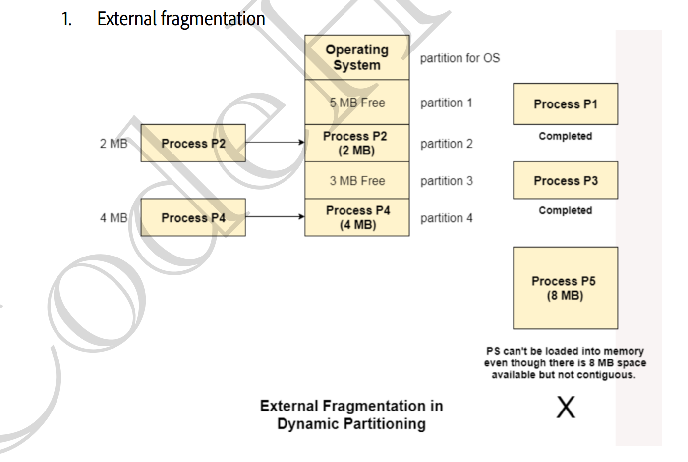
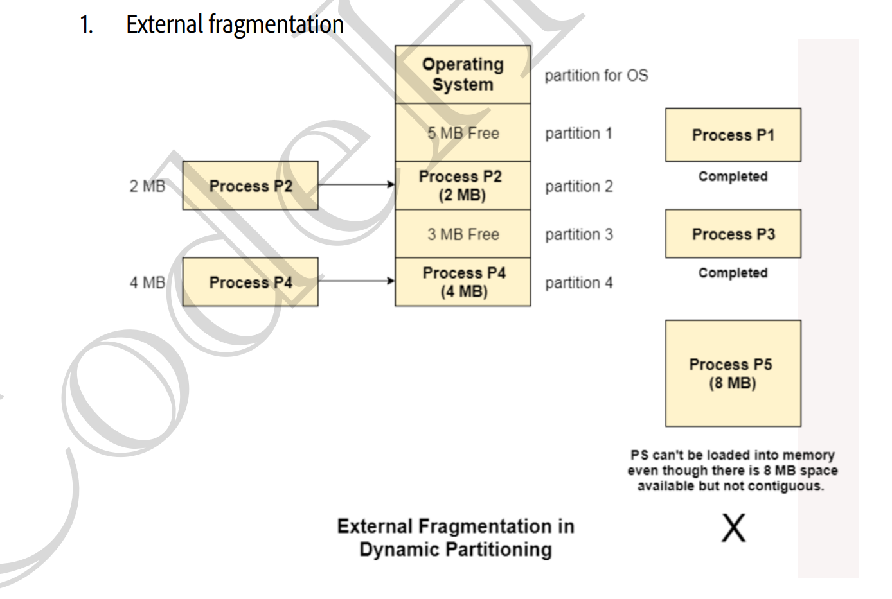

🧠 Memory Management
🎯 Why Memory Management?
💥 Problem:
Multiple processes want to use the limited physical memory (RAM).
Goal:
- ✅ Keep CPU busy
- ✅ System should stay responsive
- ✅ Protect one process from accessing another’s memory
Operating System
Always stays in memory
Process A
Running program
Process B
Waiting or ready to run
Free Memory
Unused RAM available
🏠 Logical vs Physical Address
🧠 Logical Address
📱 Created by CPU
👀 What programmer sees (starts from 0)
💭 Example: 0, 1, 2, 3...
🌀 Fake/Virtual address
🏢 Physical Address
📍 Actual location in RAM
🔒 Hidden from programmer
🧮 Calculated using Base Register
✅ Real memory address like 1000, 1001...
🔄 Address Translation with Base Register
🛠️ MMU (Memory Management Unit) converts Logical → Physical
Formula:
Example: Base = 1000, Logical = 25 → Physical = 1025

🛡️ Memory Protection - Base & Limit Registers
How OS Protects Memory:
🏠 Base Register
Starting address in physical memory (e.g. 1000)
📏 Limit Register
Total size allowed (e.g. 500 bytes)
Rule: CPU checks every memory access using:
If valid ➡️ Then: Physical = Base + Logical
// Memory Protection Check (hardware logic)
if (logical_address >= limit_register) {
TRAP_TO_OS(); // ❌ Illegal memory access!
} else {
physical_address = base_register + logical_address;
}
💡 Interview Tip:
Q: What if a process tries to access memory beyond its limit?
A: CPU generates a trap ➡️ OS catches it ➡️ Process is terminated ➡️ “Segmentation Fault”
📦 Memory Allocation Methods

Two Main Approaches:
🟦 Contiguous Allocation
Process memory is in one continuous block
📍 Like parking in adjacent spots
🟨 Non-Contiguous Allocation
Process memory is in scattered blocks
📍 Like parking in separate spots
🔧 Contiguous Allocation Types
🔒 Fixed Partitioning
Memory divided into fixed-size partitions at boot time

✅ Advantages:
- Simple to implement
- Fast allocation
- No external fragmentation
❌ Disadvantages:
- Internal fragmentation
- Process size limitation
- Low multiprogramming
🔄 dynamic Partitioning
Partition size decided when process loads
 

✅ Advantages:
- No internal fragmentation
- No process size limit
- Better multiprogramming
❌ Disadvantages:
- External fragmentation
- Complex allocation
- Need compaction
🎯 Free Space Allocation Algorithms
The Problem:
after Complete the process, they live and hole is create,then allocate og hole is call free space management
🚀 First Fit
.png)
Strategy: Pick first hole that fits
Speed: ⚡ Fastest
Memory Use: 🟡 Average
🎯 Best Fit
.png)
Strategy: Pick smallest hole that fits
Speed: 🐌 Slowest
Memory Use: 🟢 Best (less internal frag)
💥 Worst Fit
.png)
Strategy: Pick largest hole that fits
Speed: 🐌 Slow
Memory Use: 🔴 Worst
⏭️ Next Fit
.png)
Strategy: First fit, but start from last allocated
Speed: ⚡ Fast
Memory Use: 🟡 Average
💡 Interview Tip:
Q: "Which algorithm is best?"
A: "Depends on requirements. First Fit for speed, Best Fit for memory efficiency. Generally, First Fit and Best Fit are most commonly used."
🧹 Compaction/Defragmentation

What is Compaction?
Moving all allocated partitions together and all free space together
✅ Benefits:
- Eliminates external fragmentation
- Creates large free blocks
- Allows larger processes to load
❌ Costs:
- Expensive (copy all process data)
- System stops during compaction
- Need to update all pointers
💡 Interview Tip:
Q: "When should we do compaction?"
A: "When external fragmentation becomes severe and no free block can satisfy new requests, but total free space is sufficient."
⚡ Quick Revision Points
🔑 Key Concepts to Remember:
- ✅ Logical Address: CPU generates, programmer sees, virtual
- ✅ Physical Address: Real memory location, hardware uses
- ✅ MMU: Translates logical to physical (Base + Logical)
- ✅ Fixed Partitioning: Simple but internal fragmentation
- ✅ Dynamic Partitioning: No internal frag but external frag
- ✅ Internal Fragmentation: Wasted space inside partition
- ✅ External Fragmentation: Scattered free space
- ✅ First Fit: Fastest algorithm
- ✅ Best Fit: Least memory waste
- ✅ Compaction: Solves external fragmentation
🎯 Common Interview Questions:
- Q: "Why can't we access physical address directly?"
- A: "For security, isolation, and dynamic memory management."
- Q: "How does OS prevent one process from accessing another's memory?"
- A: "Using base and limit registers. MMU checks every access."
- Q: "What's the difference between internal and external fragmentation?"
- A: "Internal = waste inside partition, External = scattered free space."